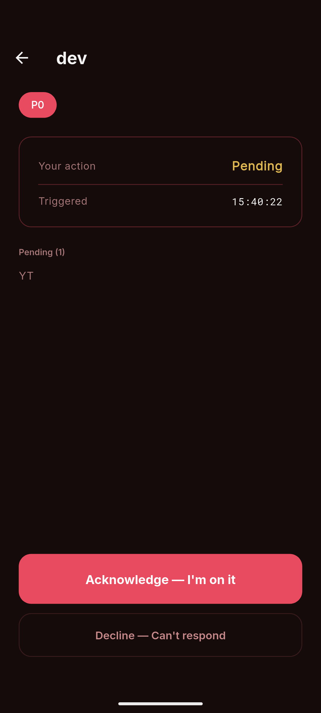
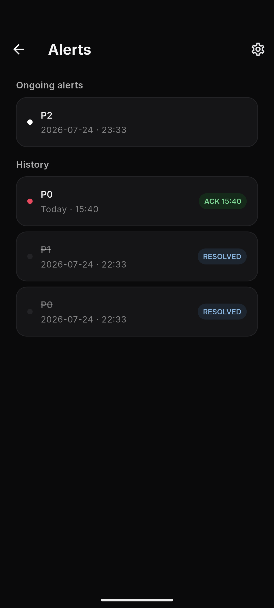
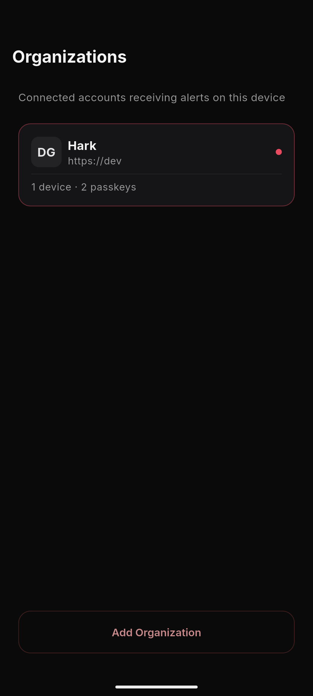
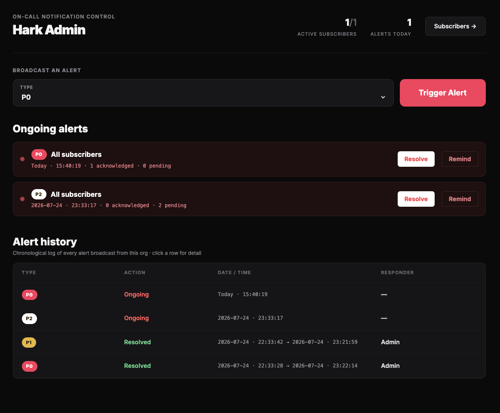
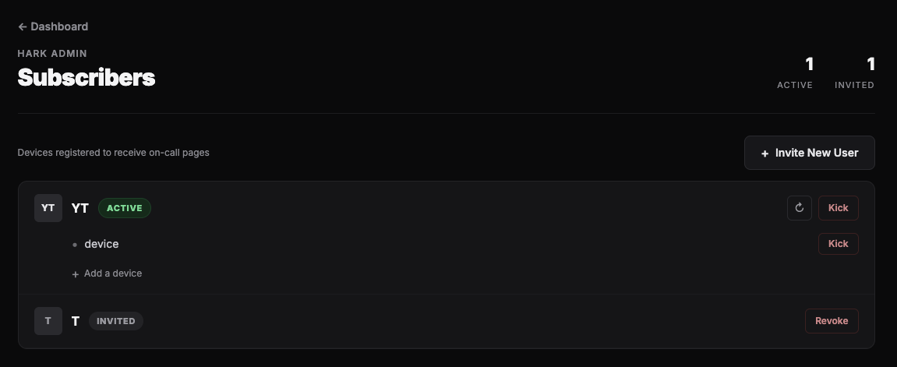

Zero context
No logs, incident details, or sensitive infrastructure data live on a personal device.
Hark is open-source, zero-context paging for teams that cannot afford to miss a critical alert.

No logs, incident details, or sensitive infrastructure data live on a personal device.
Native notifications built to break through the noise when an incident is real.
Inspect it, self-host it, and keep ownership of your alerting path.
A calm, dedicated receiver
Hark gives on-call engineers only what they need to take ownership—without exposing the rest of your incident context.


A deliberately narrow system
Your monitoring system calls Hark when an incident needs attention.
Hark reaches the relevant on-call engineer through a dedicated mobile app.
The engineer acknowledges the page, then investigates in the tools that already hold the context.
A focused control plane
The lightweight admin console gives incident commanders a direct view of subscribers, ongoing alerts, and acknowledgements.


Self-hosted and transparent
Hark includes a Go backend, a Flutter app for iOS and Android, passkey authentication, and Firebase Cloud Messaging delivery.
Read the source on GitHub